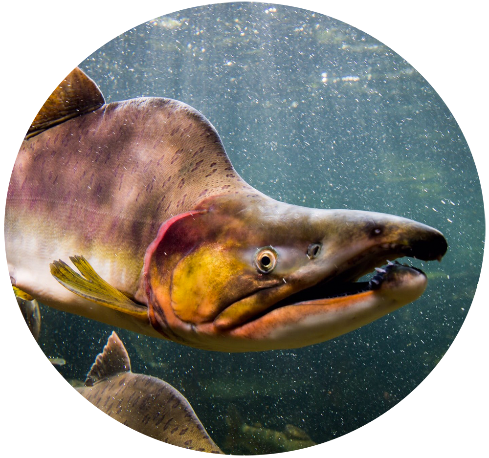

Pink
oncorhynchus gorbuscha
Also known as humpies, due to the very large hump males get just behind the head, during the spawning phase. Although they are the smallest of the species, they are the most abundant in number. They spend the least amount of time in freshwater, spawning in two year cycles very close to the mouth of streams with little to no upstream migration. While in the ocean they appear to have steel blue to blue green backs, silver sides, and a white belly with large oval spots covering their back, adipose fin and both lobes of the caudal fin. During the spawning phase pinks have dark backs with a pinkish wash and green blotches on their sides. These fish generally live for 2 years, are about 18-24in in length, and weigh about 3-5 lbs.